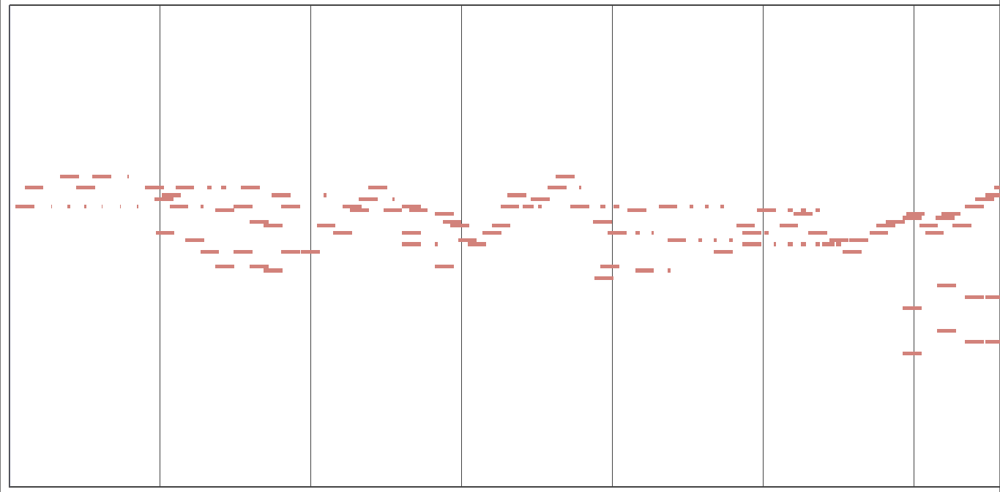

以 RNN 模型實現樂曲的生成

作者
黃米禾
指導老師
林淑玲 老師
作品摘要
於 2018 年被提出的「PerformanceRNN」是一個專門用於生成音樂演奏的遞歸類神經網路，訓練時會將樂曲解析成數值各異的不同事件「詞彙」的組合，其特點是可以還原演奏者在演奏時所展現出的表現力。本研究在訓練此模型時以訓練資料中某些事件的分布方式作為「控制訊號」同時輸入模型，如音符密度、音程分布等，嘗試使訓練好的模型能在接收到控制訊號後以符合其訊號所要求的特徵來生成音樂，並比較不同種類的控制訊號間的異同。